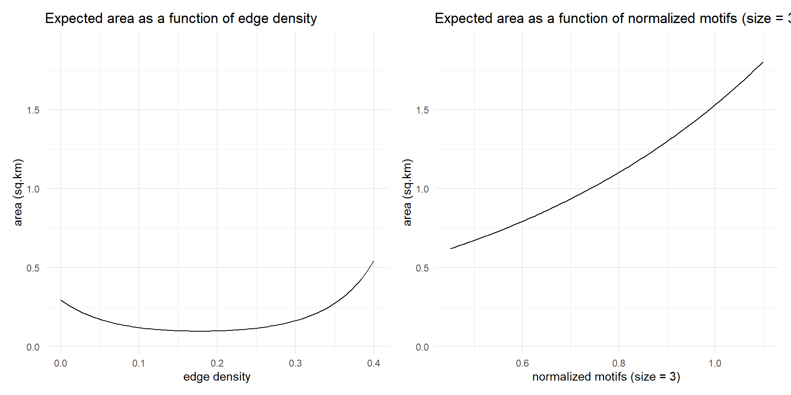

| Type | n | mean | sd | p0 | p25 | p50 | p75 | p100 | hist |
|---|---|---|---|---|---|---|---|---|---|
| All | 833 | 1.15 | 0.32 | 0.14 | 0.94 | 1.15 | 1.40 | 1.86 | ▁▃▇▇▃ |
| Suburban | 491 | 1.06 | 0.28 | 0.19 | 0.88 | 1.07 | 1.25 | 1.67 | ▁▃▇▇▃ |
| Urban | 342 | 1.29 | 0.34 | 0.14 | 1.03 | 1.37 | 1.57 | 1.86 | ▁▂▆▇▇ |
Reality or wishful thinking:
Network attributes of 15-minute neighbourhoods
The 15-min neighborhood1.
The 15-min neighborhood is powered by:
The 15-min pedshed
A 15-min pedestrian shed \(\equiv\) a 15-min walking isochrone.
When combined with the environment, the 15-min pedshed is:
\[ A_i = \sum_{j \in \text{15-min pedshed}} O_j \]
Keeping the environment constant, bigger pedsheds result in higher accessibility.
The maximum pedshed area1 would be in a homogeneous, isotropic surface (i.e., a featureless plain).
Streetscapes limit where movement can happen, which inevitably leads to smaller pedsheds.
And furthermore, not all streetscapes are created equal.
How much do 15-min pedsheds vary in a typical Canadian city (Hamilton)?
What are their characteristics?
Open source data.
\(n = 888\) urban and suburban zones in Hamilton (rural Hamilton excluded).
Open source software (R).
Open, reproducible research.
pedsheds calculated from zonal centroids using r5r assuming a walking speed of 3.6 \(km/h\).
Summary of pedshed areas (max. pedshed area is 2.54 \(km^2\)).
Notice the large variability within the city and between suburban and urban Hamilton.
| Type | n | mean | sd | p0 | p25 | p50 | p75 | p100 | hist |
|---|---|---|---|---|---|---|---|---|---|
| All | 833 | 1.15 | 0.32 | 0.14 | 0.94 | 1.15 | 1.40 | 1.86 | ▁▃▇▇▃ |
| Suburban | 491 | 1.06 | 0.28 | 0.19 | 0.88 | 1.07 | 1.25 | 1.67 | ▁▃▇▇▃ |
| Urban | 342 | 1.29 | 0.34 | 0.14 | 1.03 | 1.37 | 1.57 | 1.86 | ▁▂▆▇▇ |
Intersect the network and the pedsheds to extract the subset of the network for each pedshed.
Global descriptors of the network.
Profiling the pedsheds based on their network attributes.
Typically suburban networks contain many unique patterns (few motifs).
Typically urban networks contain isomorphic patterns that repeat (large number of motifs).
Re-examining the areas of the pedsheds.
| leaf | n | Type | mean | sd | p0 | p25 | p50 | p75 | p100 | hist |
|---|---|---|---|---|---|---|---|---|---|---|
| Leaf 1 | 26 | Typically suburban | 1.22 | 0.17 | 0.79 | 1.13 | 1.25 | 1.32 | 1.50 | ▁▃▅▇▃ |
| Leaf 2 | 218 | Typically urban | 1.45 | 0.20 | 0.72 | 1.33 | 1.50 | 1.60 | 1.86 | ▁▂▃▇▂ |
| Leaf 3 | 557 | Typically suburban | 1.02 | 0.28 | 0.14 | 0.84 | 1.04 | 1.21 | 1.67 | ▁▃▇▇▂ |
| Leaf 4 | 32 | Typically urban | 1.35 | 0.35 | 0.59 | 1.07 | 1.50 | 1.64 | 1.76 | ▂▃▃▃▇ |
pedshed area as a function of network attributes.
